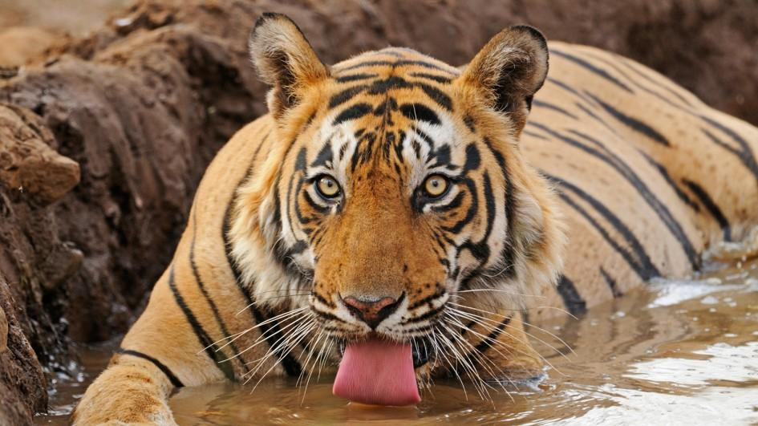

Poaching is an issue in India because of the shrinking tiger and other animal populations
Poaching in India, from what I could find, starts with a man named Sansar Chand. Sansar Chand is like El Chapo (sort of), but for animal parts and in India. In the year 2000, there were about 100,000 tigers in India, but thanks to Sansar Chand, there are now only about 3,000.
Most of those remaining tigers, about 1,700, are Bengal tigers. Most of the poached tiger parts end up in China, where a tiger skin can sell for 6.5 million rupees. There's a conviction rate of a good 4% for poachers. I'm not really sure how this affects India on a social level, but it must cause some tensions between the government and the citizens. Economically, the Indian government is slowly bleeding money, like a cut finger, that bled money going towards stopping poaching. If this makes the government bleed, the environment is bleeding more, as tigers are a really important part of the environment, and removing them would throw the environment into the discard pile.